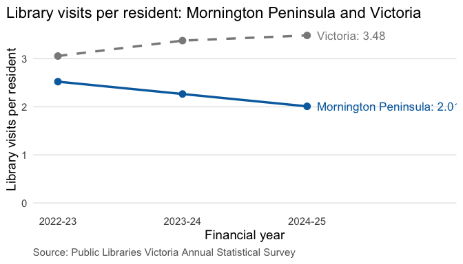

Website:
vicvisits helps council library service managers in Victoria answer one question:
How do my service’s library visits per resident compare with the Victorian figure, and has the gap changed from 2022-23 to 2024-25?
The package contains:
-
Data:
library_visits(50 library services across 3 financial years) andvic_visits(the statewide figure used as the benchmark). -
compare_visits(): compares one library service with Victoria in each year, including the difference and the service’s rank. -
plot_visits(): draws a line chart comparing one service with Victoria. -
run_app(): launches a Shiny app for exploring the results.
Installation
Install the package from GitHub:
# install.packages("remotes")
remotes::install_github("ETC5523-2026/etc5523-assignment-4-scho0107")Launch the app
In the app, choose your library service and a financial year in the sidebar. The app shows your service’s visits per resident next to the Victorian figure, a written explanation of the difference, a three-year trend chart, and a ranking chart showing how the service compares with other Victorian library services.
Example
library(vicvisits)
compare_visits("Mornington Peninsula")
#> # A tibble: 3 × 8
#> library_service financial_year visits_per_person vic_visits_per_person
#> <chr> <chr> <dbl> <dbl>
#> 1 Mornington Peninsula 2022-23 2.52 3.05
#> 2 Mornington Peninsula 2023-24 2.26 3.37
#> 3 Mornington Peninsula 2024-25 2.01 3.48
#> # ℹ 4 more variables: difference <dbl>, rank <int>, n_services <int>,
#> # reported <lgl>Mornington Peninsula’s visits per resident fell from 2.52 in 2022-23 to 2.01 in 2024-25, while the Victorian figure rose from 3.05 to 3.48. The shortfall compared with Victoria therefore widened from about 0.5 to about 1.5 visits per resident.
plot_visits("Mornington Peninsula")
Data
The data come from the Public Libraries Victoria (PLV) Annual Statistical Survey, Final Datasets 2022-23 to 2024-25, available from https://www.plv.org.au/resources/earlier-reports-and-surveys. Data © Public Libraries Victoria.
The script in data-raw/library_visits.R downloads the PLV workbook, calculates the summaries and saves only the summaries in the package. It follows the definitions in the PLV Library Statistics Benchmarking Report:
- Library visits = branch visits + mobile library visits.
- Visits per resident = library visits divided by municipal population.
- The Victorian figure = total Victorian visits divided by total Victorian population.
Main limitations:
- Visits count entries, not different people.
- Councils with many workers, students or visitors can have high visits per resident because non-residents also use their libraries.
- Indigo (2022-23) and Towong (2022-23 and 2023-24) did not report data. PLV’s estimates for these observations are not used; their rates are
NA. - Cardinia Shire moved from Casey-Cardinia Libraries (now Connected Libraries) to Myli on 1 December 2022. This changed the areas served, so comparisons involving 2022-23 for these two services should be treated with caution.
Licence
The code in this package is released under the MIT licence.
The original PLV data are © Public Libraries Victoria and cannot be redistributed, so the original workbook is not included in this package or repository. The package contains only derived visits-per-resident summaries, with attribution to Public Libraries Victoria. To recreate them, run data-raw/library_visits.R, which downloads the original file directly from the PLV website.